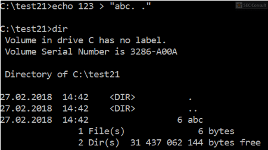

There exists a second trick which can be used to hide from the tools. On Windows you can add “.<spaces>.” at the end of a file and Windows will automatically remove it (canonicalization removes it).

However, we can create such a file with an ADS! The funny property of such a file is that tools will not be able to open the file, because a path like “xyz. .” will automatically be changed to “xyz” and this file doesn’t exist.
Here is the proof:

The created ADS foobar.txt can’t be found by the tools:

Side note 1: Such files can also be created via: echo test > “test. .::$DATA”
Side note 2: Please note that the “..:abc.txt” ADS is the ADS which was created on “C:\:abc.txt”.
We can also create a directory with the name “. .” like this:

Then it’s not possible to enter this folder:

Moreover, the already mentioned technique (like cd . .\. .\ doesn’t work), but cd “. .::$INDEX_ALLOCATION” works (the double quotes are important).
If we can add spaces in between of a directory name, we can also add it at the end like “b ” or “.. ” or “. “.

Explanation: There is a “b” and a “b ” folder, a file named “a” and a file named “a “, the two default dirs “.” and “..” plus the “. ” and “.. ” ones and the “. .” dir.
Directories with the name “.. ” can be entered with our already discussed technique:

Side note 1: This folder can be opened via the GUI if you click twice on the folder, also the content of the folder will be displayed correctly. However, files in it can’t be opened because of the wrong path (explorer.exe uses C:\test22\.. \.. \123.txt instead of C:\test22\.. \123.txt). Powershell will again be stuck in an endless loop when searching such folders.
Side note 2: You can also create an ADS on a folder with a name such as “abc”. Then you can rename the folder to a name just containing numbers (e.g. “1”). After that you can still see the ADS, but you can’t open it (ADS on a folder with a number as name doesn’t work). To open the ADS data you have to rename the folder first back to for example “abc”.